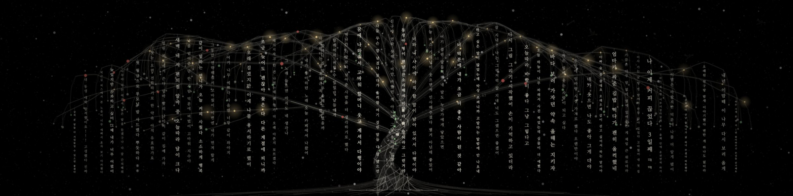
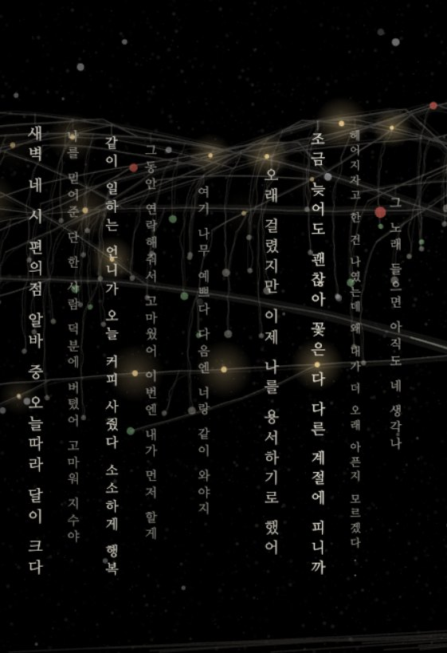
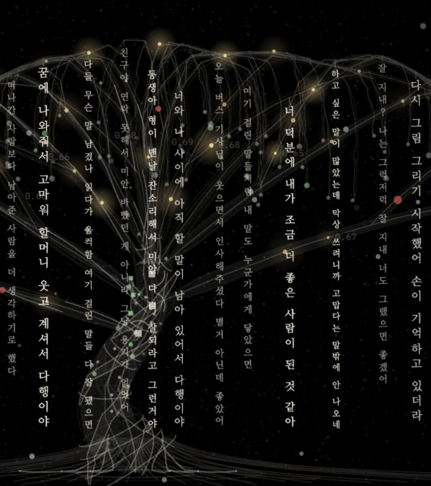
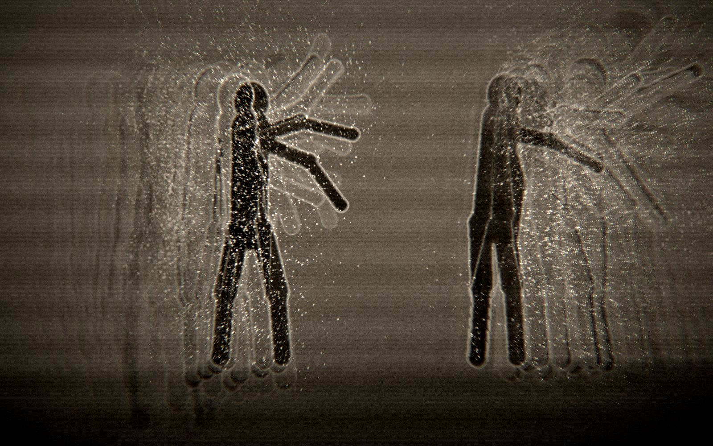

01 · Interactive Media Art · 2026
말을 걸어 두는 나무Words Left on a Tree
노래 〈가시나무〉를 듣다가 나무 한 그루가 떠올랐다. 지나가던 사람들이 잠깐 멈춰 서서 말을 걸어 두고 가는 나무였다.
고맙다는 말, 미안했다는 말, 오늘 본 노을 이야기 같은 것들이 그 가지에 걸린다. 모르는 사람의 말 옆에 내 말이 걸리면 다음에 온 사람은 둘을 나란히 읽게 된다.

말을 걸다
누군가에게 먼저 말을 건네다. 관객은 화면 아래 상자에 하고 싶은 말을 적는다.
나무에 걸다
떨어지지 않게 어딘가에 매달아 두다. 새가 그 말을 물고 가 빈 가지에 걸어 둔다.
말을 거는 일과 무언가를 걸어 두는 일. 우리말이 이 두 행동에 같은 동사를 쓴다는 데서 이 미디어아트를 기획했다. 처음 보는 사람과도 말 한마디를 건네면 사이가 생긴다. 그 말은 금방 흩어지기도 하지만 어딘가에 걸어 두면 다음 사람이 읽을 수 있게 남는다.
퇴근길 버스에서 본 노을이 너무 예뻐서 혼자 보기 아까웠다나무에 걸린 말 가운데 하나
Branch
가지
말이 걸리는 자리다. 뿌리에서 갈라진 약 380가닥의 선이 가지 끝까지 이어진다.
Words
문장
누군가 걸어 둔 말이다. 버드나무 잎처럼 가지 끝에서 아래로 늘어져 있다.
Bird
새
관객이 쓴 말을 물고 빈 가지로 간다. 사람이 다가오면 그 곁으로 내려온다.
Winter
겨울
가지 사이 작은 전구가 깜박이고 눈이 천천히 내린다. 트리라는 느낌만 살짝 남겼다.


가까운 문장은 크고 밝게, 먼 문장은 작고 흐리게 두어 세 겹의 깊이를 만들었다.
02 · 나무의 수정 과정
덜어내며 찾은 모습
화면 비율은 처음부터 4 대 1로 두고, 고칠 때마다 붙잡은 질문을 하나씩 바꿔 갔다.
- 01
번들 트리
수천 가닥의 선을 겹쳐 버드나무를 처음 그렸다.
- 02
형태 찾기
그래프, 그물, 열린 가지를 놓고 견주어 보았다.
- 03
데이터 트리
가닥마다 뿌리에서 잎 끝까지 길이 이어지게 했다.
- 04
음악
나무는 그대로 두고 입자만 음악을 따라가게 했다.
- 05
관객
사람이 들어오면 새가 한 마리씩 곁으로 온다.
- 06
겨울
트리 느낌만 남기고 글이 가장 밝게 보이도록 정리했다.
빼고 나서 남은 것
| 빼낸 것 | 남긴 것 | |
|---|---|---|
| 가시나무에 매달린 말들 | → | 말을 걸어 두는 나무 |
| 쓸쓸한 Saltwater Silence | → | 소원을 비는 듯한 곡, A Quiet Wish |
| 음악에 맞춰 흔들리던 나무 | → | 제자리에 가만히 서 있는 나무 |
| 손글씨체 | → | 나눔명조 |
| 줄기를 휘감던 빛줄기와 꼭대기 별 | → | 가지 사이 작은 전구와 내리는 눈 |
| 저절로 날아오던 문장 | → | 관객이 직접 쓴 말만 걸린다 |
움직임은 새와 눈에 맡기고, 나무와 글은 제자리에 두기로 했다.
이름도 여러 번 바뀌었다
곧게 선 기둥이 밋밋해 보여서, 철사와 리본으로 만든 조각들을 참고해 여러 가닥의 띠가 S자로 꼬여 오르는 줄기로 다시 세웠다.
걸린 말의 수
25개부터 150개까지 걸어 보고, 문장이 읽히면서도 나무가 보이는 수를 골랐다.
문장은 잘 읽히지만 가지가 비어 보인다
최종. 가지마다 말이 드리워 잎처럼 보인다
커튼처럼 빽빽해져 가지가 가려진다
나무보다 글자의 벽에 가깝다
03 · 관객과 만나는 방식
다가와서 말을 걸면,
그 말이 가지에 걸려 다음 사람을 기다린다
01
기다림
사람이 없을 때 나무는 바람에 조금씩 흔들리고 새들이 가지 사이를 오간다. 카메라는 움직이지 않고 언제나 나무 전체를 보여 준다.
02
다가옴
카메라가 프레임 안의 사람 수와 화면 속 키를 읽는다. 키가 크게 잡힐수록 가까이 온 것으로 보고, 그 사람과 짝이 된 새가 다가와 빛난다.
03
말 걸기
화면 아래 상자에 말을 쓰고 Enter를 누르면 상자 안의 새가 그 말을 물고 나무로 날아간다. 가지를 한 바퀴 돌고 내려앉으면 글자가 한 자씩 적힌다.
04
곁
걸린 말은 그 자리에서 다음 사람을 기다린다. 쉰 개를 넘으면 가장 오래된 말 하나가 천천히 떨어진다.
영상은 저장하지 않고 사람 수와 위치 같은 감지값만 쓴다.
04 · 놓일 자리
벽 하나, 프로젝터 한 대, 키보드 하나
- 투사, 16 대 9 안의 4 대 1프로젝터 한 대가 비추는 1920 × 1080 화면에서 위쪽 1920 × 480은 나무가 쓰고, 아래쪽에는 말을 쓰는 상자를 둔다.
- 더 크게 보일 때벽이 넓다면 프로젝터 두 대를 이어 3840 × 960으로 나무만 비추고, 타이핑 화면은 작은 모니터로 따로 뺄 수 있다.
- 키보드와 카메라키보드는 화면 앞 받침대에 둔다. 관객을 보는 카메라는 캡처보드에 연결해 쓰고, 여의치 않으면 웹캠으로 바꾼다.
만든 방식
브라우저에서 돌아가는 작품으로 만들고, 같은 장면을 TouchDesigner 네트워크로도 다시 지었다. 관객 감지는 별도의 감지 서버가 SAM 3(없으면 SAM 2)로 사람을 나눠 사람 수와 위치만 보낸다.
05 · 먼저 만든 실험 · 2026
Granite ResonanceFeedbackNoise

카메라에 비친 몸이 음악에 맞춰 번지고 흩어지게 만든 첫 실험. 화면이 화면을 다시 비추며 겹겹이 쌓이고, 몇 초 전의 내 모습이 지금의 나 위로 천천히 겹쳐 온다. 관객의 윤곽은 바람에 날리듯 입자로 흩어진다.
- 저음줌 · 왜곡 · 흩날림
- 중음회전 · 흐름
- 고음노이즈 · 떨림
- 킥터짐 · 되감기
여기서 입자만 가져와 〈말을 걸어 두는 나무〉의 배경으로 깔았다.
06 · 작가
이성훈
첨단영상대학원 예술공학
Department of Imaging Science and Arts
- 작업
- 인터랙티브 미디어아트, 실시간 그래픽
- 도구
- 웹 그래픽(Canvas · WebGL), TouchDesigner, 생성형 AI, 컴퓨터 비전
- 수업
- 생성형 AI 디지털영상 · 2026
오늘 건넨 말 한마디가
누군가의 말 곁에 걸린다.
말과 관계를 붙잡고, 관객이 직접 참여하는 화면을 코드로 짓는다. 상징을 덧붙이기보다 화면 안에서 실제로 일어나는 일을 적고, 여러 번 덜어내며 작품의 모습을 찾아간다.
멀리서는 나무 한 그루로, 가까이서는 누군가의 말로 보였으면 한다.